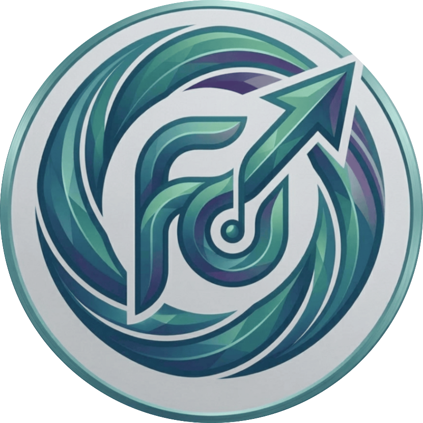

Choose your charm
Explore the available designs and switch to a favourite whenever you feel like a change.

BK FLOATYDANGLESFloating charms for your Windows desktop. A small detail that makes your everyday screen feel a little more like yours.
A desktop companion designed around playful details, simple controls, and movement that adds character without taking over your screen.
Explore the available designs and switch to a favourite whenever you feel like a change.
Drag and position your charm, then enjoy its smooth hanging and swinging movement.
A lightweight Windows app focused on a small, cheerful addition to your desktop.
Click below to download BK FLOATYDANGLES version 1.0.0 directly from its official GitHub installer link.
Have a question before you install? Start here, or visit the official release page for version details.
Open release page ↗It is a Windows desktop application that lets you choose and interact with floating charm designs featuring hanging and swinging movement.
Click any Download button to start downloading the Windows installer directly. If it does not start, visit the official release page and check its Assets section.
Download the installer, open it, and follow the installation steps. Review any Windows security warnings carefully before continuing.
The installer is not digitally signed. A warning is not proof that a file is malicious, nor proof that it is safe. Review the source and warning before deciding.
An account is not required for the core desktop experience. This does not guarantee that every aspect of device or application activity is private.
Visit the official GitHub repository and use its available contact or issue options to share feedback with the developer.